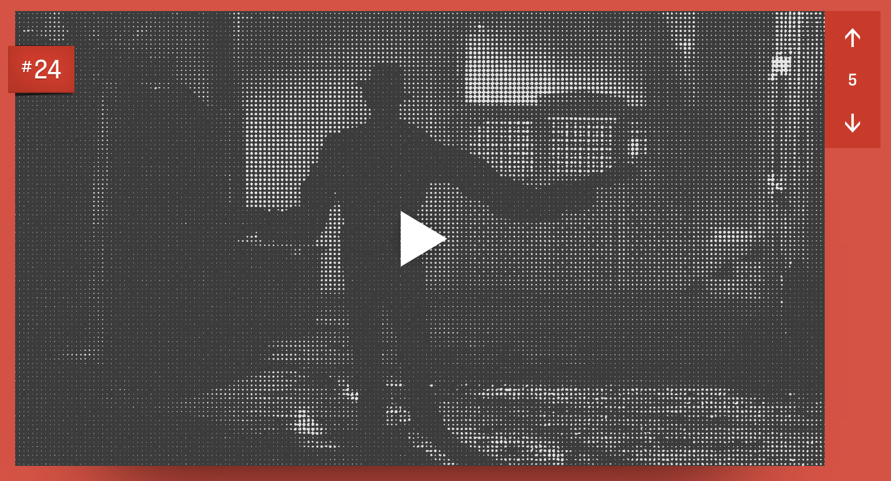
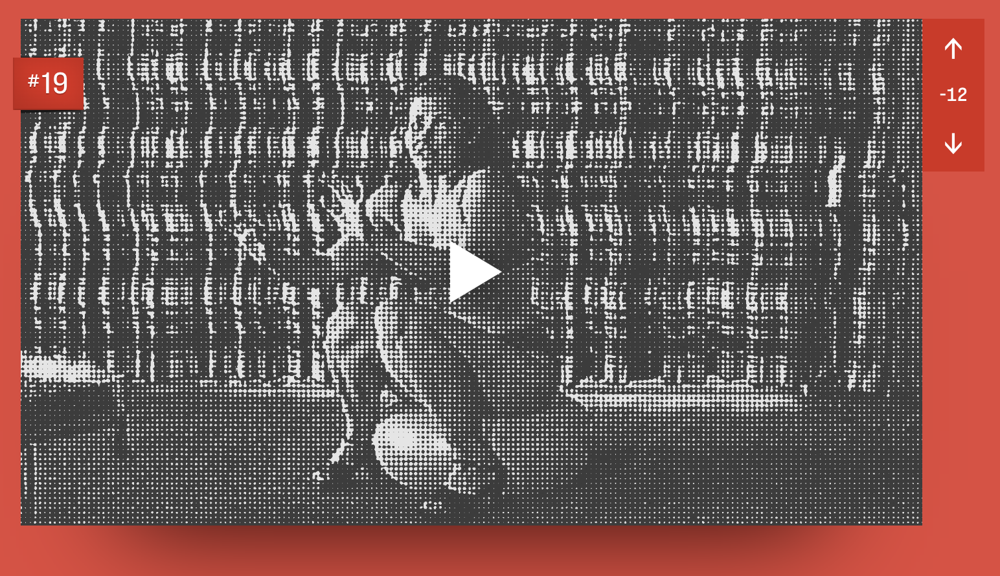

BEST HORROR SCENES
An ever growing collection featuring some of the best scenes in horror.
Best Horror Scenes” is a collection of scenes I feel are some of the most affecting in horror. Some may be simple black cat scares, others may be more subdued or nuanced. Many come from films that aren't necessarily “horror” but have elements or threads of horror.A Nightmare On Elm Street (1984)
Directed by Wes Craven

My rating: 9/10
1 Comment
Leave a Comment
Martyrs (2008)
Directed by Pascal Laugier
My rating: 9/10
No Comment
Leave a Comment
The Poughkeepsie Tapes (2007)
Directed by John Erick Dowdle

My rating: 9/10
No Comment
Leave a Comment